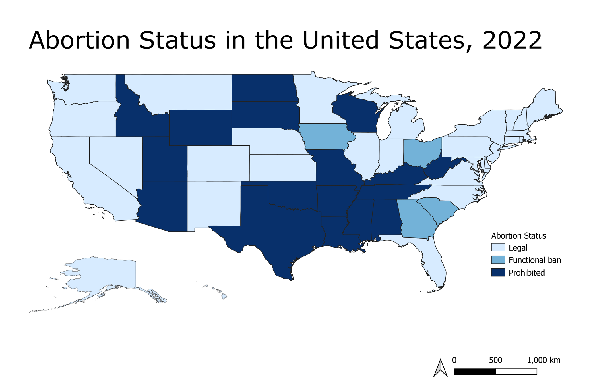

Visualizations
Voting Turnout and Eligibility Graphs
abortionvoting_df %>%
drop_na() %>%
ggplot(aes(x = state_abv)) +
geom_point(aes(y = turnout_rate2018, colour = "2018")) +
geom_point(aes(y = turnout_rate2022, colour = "2022")) +
theme(axis.text.x = element_text(angle = 90, hjust = 1)) +
labs(
title = "Voting Turnout Rate in 2018 vs 2022",
x = "State",
y = "Rate Difference",
caption = "Figure 1. Voting Turnout Rate in 2018 and 2022.")
Figure 1 shows the voting turnout rate for all 50 states in 2018 and 2022. The data points for 2018 are purple, and the data points for 2022 are yellow. From the figure, it can be determined that generally, the voting turnout rate in 2018 was higher than the voting turnout rate in 2022.
abortionvoting_df %>%
drop_na() %>%
ggplot(aes(x = state_abv)) +
geom_point(aes(y = turnout_estimate2018, colour = "2018")) +
geom_point(aes(y = turnout_estimate2022, colour = "2022")) +
theme(axis.text.x = element_text(angle = 90, hjust = 1)) +
labs(
title = "Turnout Estimate Number in 2018 vs 2022",
x = "State",
y = "Rate Difference",
caption = "Figure 2. Turnout Estimate Number in 2018 and 2022.")
Figure 2 shows the turnout estimate number in 2018 and 2022. The estimate number for 2018 is purple and the estimate number for 2022 is yellow. From this figure, it can be determined that the estimates for voting turnout in 2022 is lower than those from 2018. When comparing this figure with the actual turnout rate (Figure 1), we see that the actual voting turnout is generally lower than the estimated voting turnout.
abortionvoting_df %>%
drop_na() %>%
ggplot(aes(x = state_abv)) +
geom_point(aes(y = voting_eligible_pop2018, colour = "2018")) +
geom_point(aes(y = voting_eligible_pop2022, colour = "2022")) +
theme(axis.text.x = element_text(angle = 90, hjust = 1)) +
labs(
title = "Voting Eligibility Population in 2018 vs 2022",
x = "State",
y = "Population",
caption = "Figure 3. Voting Eligibility Population in 2018 and 2022.")
Figure 3 displays the population of people that were eligible for voting in 2018 and 2022. The data points for 2018 are purple and the data points for 2022 are yellow. From the figure, it can be seen that generally, more people are eligible to vote in 2022. Many points did not experience either an increase or a decrease in 2022 compared to 2018. External factors should be considered, especially from the information provided from Figures 1 and 2, where the voting turnout estimate and rate was lower in 2022.
abortionvoting_df %>%
drop_na() %>%
ggplot(aes(x = state_abv)) +
geom_point(aes(y = voting_age_pop2018, colour = "2018")) +
geom_point(aes(y = voting_age_pop2022, colour = "2022")) +
theme(axis.text.x = element_text(angle = 90, hjust = 1)) +
labs(
title = "Voting Age Population in 2018 vs 2022",
x = "State",
y = "Difference",
caption = "Figure 4. Voting Age Population in 2018 and 2022.")
Figure 4 depicts the voting age population in 2018 and 2022. The data points for 2018 are purple and the data points for 2022 are yellow. From the figure, it can be seen that generally the voting age population in 2022 is higher than the voting age population in 2018.
Abortion Laws and Accessibility Graphs
abortionvoting_df %>%
drop_na() %>%
ggplot(aes(x = state_abv)) +
geom_point(aes(y = clinicdistance_jun, colour = "June")) +
geom_point(aes(y = clinicdistance_jul, colour = "July")) +
theme(axis.text.x = element_text(angle = 90, hjust = 1)) +
labs(
title = "Distance to An Abortion Provider from June to July, 2022",
x = "State",
y = "Distance (Miles)",
caption = "Figure 5. Average Distance from an Abortion Clinic from June to July after Overturn of Roe vs. Wade.")
Figure 5 portrays the average distance from an abortion clinic in June and in July. The data points for the month of July are purple and the data points for the month of June are yellow. From this figure, we can see that the distance from an abortion clinic increases in July, compared to June. This is important to consider, especially with Roe vs. Wade being overturned in June. From this figure, the magnitude that policy has on institutions can be seen.

This figure was coded in QGIS and shows the status of abortion in 2022. The legend on the right codes the colors on the map, and highlights where abortion is legal, prohibited, or has a functional ban. Abortion status of states on this figure can be compared with the data from previous figures to inform politicians and other administrators on the impact of abortion status on voting.